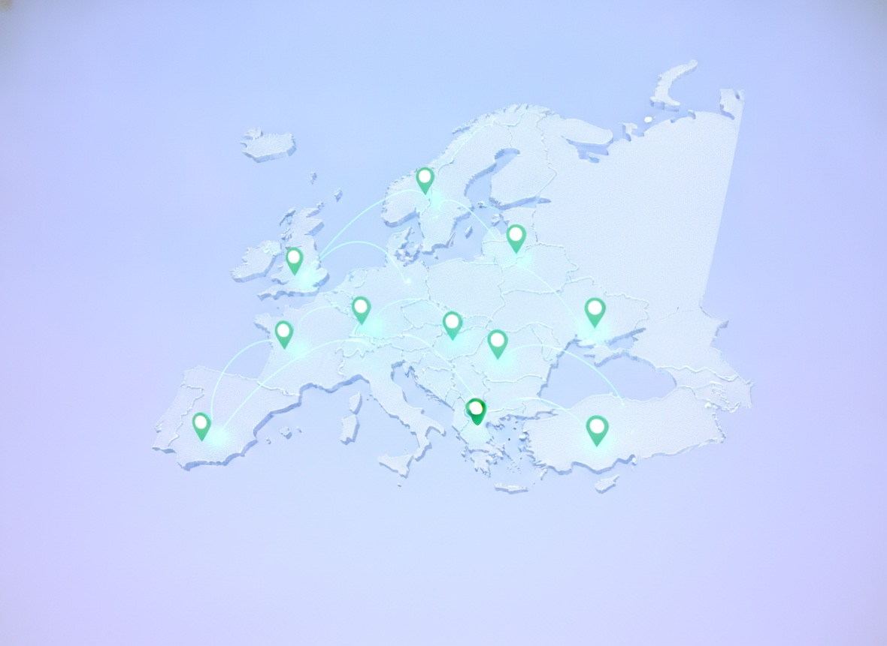

dsa-api mirrors the European Commission's Article 22 register every six hours and serves it as a free, open REST API and open dataset. No keys, no scraping, no stale copies.
By country, area of expertise, DSC or designation date.
Look up a flagger from an email, domain or website.

A changelog of every add, edit, removal and restoration.
Counts by country and area, ready for a dashboard.
You can be reading live data in under a minute — from a browser, a notebook, or a cron job.
Browse the Swagger docs or the full /openapi.json. Eight read-only GET routes under /v1.
Public, CORS-enabled, unauthenticated. curl it, fetch() it, or grab the flat trusted-flaggers.json.
Poll /v1/changes or watch the data repo. New commits land only when the register actually changed.
Small, honest and predictable — normalized fields, stable IDs, and headers that tell you where the data came from and when.
/v1/stats — counts by country & area
14 normalized areas of expertise — the raw EU label kept alongside.
Resolve a flagger from an email, domain or website.
/lookup?domain=ochranma.sk
Public, read-only, CORS-enabled. Data licensed CC BY 4.0.
Every event, since day one
Every response carries X-Source-URL and X-Data-Updated-At.
Derived from name + DSC + date — the same entry keeps its id.
Every entry is scraped from the official EU register and attributed to the Digital Services Coordinator that designated it.
Cross-check inbound notices against the live register so flags from designated bodies jump the queue — a DSA Article 22 obligation, kept current without manual edits.
Pin a commit or read the changelog to show exactly who was a designated flagger on any date. Snapshots of the source page are kept alongside the data.
Track designations across all 21 member states over time — additions, removals and reinstatements — without re-scraping an HTML page yourself.
No key, no rate-limit gymnastics for normal use, CORS everywhere. Wire it into a spreadsheet, a bot or a dashboard in an afternoon.
Free, open, and always in sync with the EU register. No signup, no key, no catch.